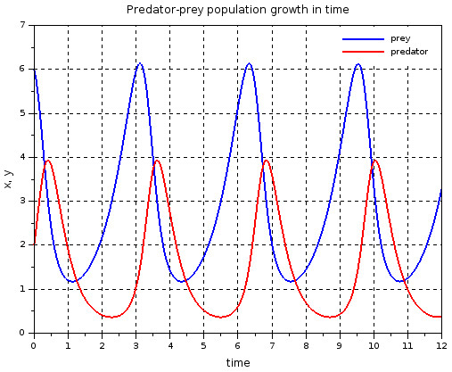

We love Complex System!
When I just get introduced to the multi-agent system (MAS), in 2017, unsurprisingly there isn’t much introductory articles, blogs, or YouTube videos that talks about this subdomain of artificial intelligence. MAS were very much under-explored in literature. After all, we are still working on making general artificial intelligence, we can surely thinking about connecting them later…… (I guess I’m not the only one who procrastinates.)
Well, unsurprisingly, lately OpenAI and DeepMind both investigated on MAS research. Google talk lately invite DeepMind researchers to give lecture on “The Role of Multi-Agent Learning in Artificial Intelligence Research at DeepMind.” Judging by big companies’ steps, perhaps we are not very far away from coordinating a group of agents?
Since I can not find a introductory post about MAS, I think it will be nice to create one. This post will use the example of a Prey Predator Model System to explore what is Multi-Agent System and it's other applications. Let's get started!
Also, if there is anything that you take away with this blog, it should be that MAS is not complicated! and it is fun.
So, what is Multi-Agent System? To begin, let’s first talk about what is an agent.
If one ever learned Java, or C ++, will know of a idea called Object Oriented Programming. An object can be an entity which contains some attribute and have some functions. This is very close to the idea of an agent. Jacques Ferber first defined that an agent can be a physical or virtual entity that can act, perceive its environment (in a partial way) and communicate with others, is autonomous and has skills to achieve its goals and tendencies.1 I view an agent as a extended object who has communication feature and autonomous decision making ability. However, the amazement does not only lies in the agent, but to connect them.
Multi Agent System (MAS) connect multiple agents together under a network topology. Under some simulation researcher would also construct environment for these agents to interact with, which is also part of MAS. Some might think, why bother? How are agents interactions interesting? It turns out that MAS can solve problems that otherwise would be complicated for monolithic program to solve. Besides, MAS is also frequently implemented by sociologist and collective psychologist to observe patterns in simulated society that are otherwise impossible to simulate.
So, if the MAS can simulate societal pattern, the agent must have been really intelligent!? Right?
Nope, the ability to autonomously making does not make the agent extremely complicated! Although part of MAS research aims to discover how to connect general artificial intelligence together and negotiating in place of human, not every Multi agent system connecting artificial intelligence together. In fact, a lot of MAS system is made of simple agents that still has most agent feature. This blog will lead you through an complicated math question (with naive assumptions), Prey Predator System, by using Multi Agent System simulation.
Long long time ago, there is a black plane and there are some green nutrition dots. There are also some blue dots too (let's call it BLUE, I love cute names) who only live if it's eats a green dot in a limited amount of time. Otherwise, it becomes weaker and weaker and will eventually die of hunger. As you can see, BLUE can perceive things (link with a highlighted beam) within a certain radius. can decide which green dot to eat or just wondering around. Yes, the smell of freedom! However, BLUE has a life span as well and it's main goal is to live and not die. Click to load the windows below
This is only an agent. It has some goal, some limit, the ability to perceive and a lot decisions to make. Things be come interesting if there are more agents. What if they have the ability to make offspring? Click to load the windows below
Since there are limited resources for BLUEs, that not everyone can be feed and thus initiate intraspecific competition, such that the population stop growing after a while. Notice here that by modeling this system through MAS, we can gain a direct impression of how each inividual survive in the environment as we can record data for all the agent (not visible here, but definitly in the background). Compare to using traditional math caclulation where you can only get the macroscopic understanding of the issue.
So far, besides limited food, it is such a paradise for BLUEs... Until, some REDs invade into their playground. Click to load the windows below
Yep, RED devour BLUE. Due to the "help" of insufficient food and ferocious predator, BLUE's polulation decrease even more. However, we all know that they are a dynamic relationship, sometime when RED eat too much BLUE that it is hard to catch more food that RED's population also decrease. And becasue of RED's disappearing, more BLUE offspring remain alive. This relationship can be captiured by the below chart.

picture Extracted from x-engineer
In a typical math class, professor would teach you Lotka-Volterra Equations. I would not go into math detail as it's not the point of the blog, but the idea is that it is a complicated formula that model the prey predator relationship. If you'd like to know the math sides, check the blog written by Nathan Crock. In stead, I would like to point out that first, you can use MAS to simulate the issue when multiple agent is involved in the system. Besdies, instead of only getting the total number of surviving item, you can use MAS and get all the internal data of each individual and make more detail assumption/deduction of the issue.
We can surely adding more species to bette model reality. I add in Fungus and Swarm below. To not get you all confusing, let's sum up all the relationship:
A common use would be digital society where each agent is considered an individual who are of some characteristics and interact with other individual as how they are defined.
These agents can also work as a proxy of a party and negotiate with other agent in order to make a deal. The list goes on a on. // A multi-agent system put multiple agents in a predefined environment. The environment can be dynamic or static depends on the usage. The agent can also be connected in a specific topology.
1: Ferber, J. (1999). Multi-agent systems: an introduction to distributed artificial intelligence (Vol. 1). Reading: Addison-Wesley.